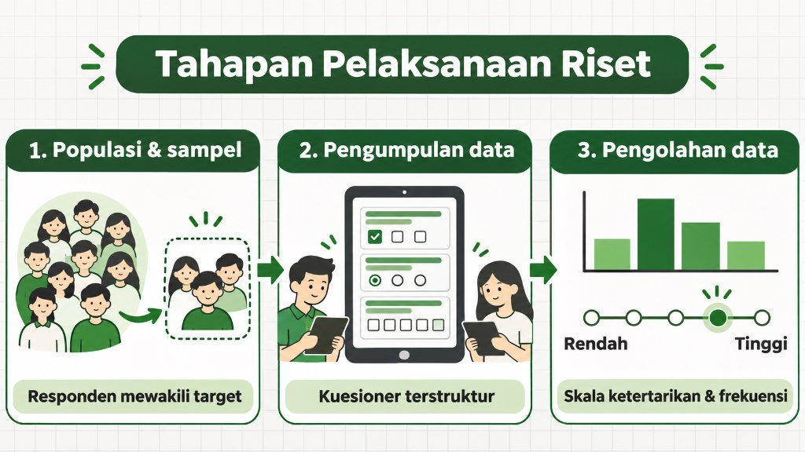

UX Research
6 min read
2026-02-05
Customer Research: Mengukur Efektivitas Sumber Informasi Promo
By Aditya Nugraha — UI/UX & Motion Designer

Riset ini memetakan bagaimana efektivitas berbagai sumber informasi promo dalam memengaruhi keputusan pelanggan (Analysis of the Effectiveness of Promo Information Sources in Influencing Customer Decisions).
Tahapan Pelaksanaan Riset
- Menentukan Jumlah Populasi & Sampel: Memastikan responden mewakili target audiens kampanye.
- Pengumpulan Data Kuantitatif: Menyebarkan kuesioner terstruktur kepada responden.
- Pengolahan dengan Metode Skala Ketertarikan & Frekuensi: Mengukur seberapa sering kanal promosi dilihat sekaligus seberapa kuat pengaruhnya terhadap ketertarikan membeli.

Output & Rekomendasi Strategi
- Mengidentifikasi sumber informasi paling efektif (misalnya Media Sosial dan Rekomendasi Teman).
- Mengidentifikasi kanal yang perlu ditingkatkan (misalnya Iklan Televisi atau kanal dengan konversi rendah).
- Menyusun rekomendasi strategi promosi ke depan: memfokuskan anggaran pada kanal berdampak tinggi dan memperbaiki format konten di kanal yang lemah.